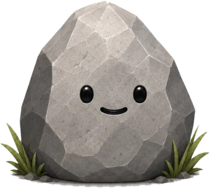
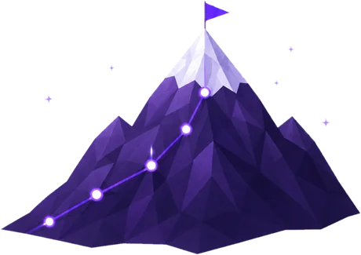

Маленький шаг сегодня — большая гора завтра.
Новые советы + Напоминания в Telegram
Мои дела 0
Камушки
Простое место для мыслей и идей
Речка
Рокки подскажет, куда направить день
Профиль
Рокки
Твой помощник, который помогает держать фокус на важном
Настройки
Гора сделанного

Рокки в TelegramСоветы дня, новости и спокойные напоминания
Помощь и поддержкаОтветы на вопросы и связь с нами›
О приложенииУсловия, политика и версия›
Новое дело
Когда сделать?Без срока ›
Камень рядом и напомнит
в нужный момент
Когда сделать
Перетащи сюда,
чтобы удалить